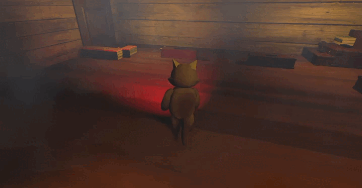
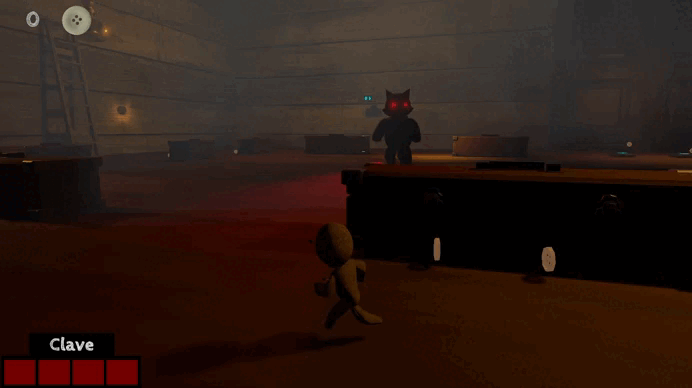
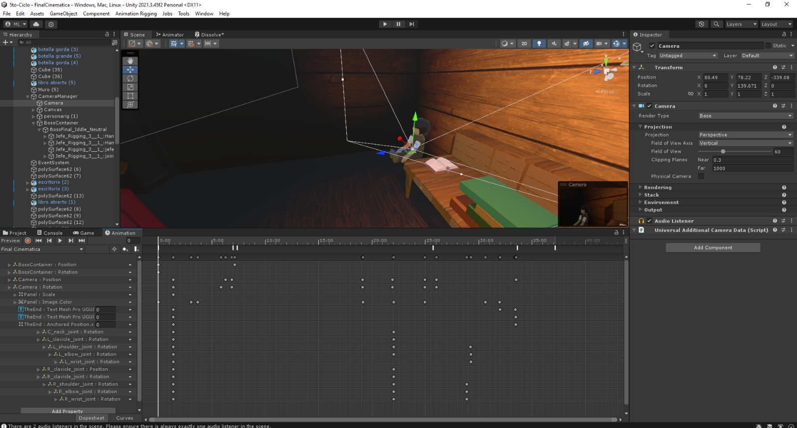
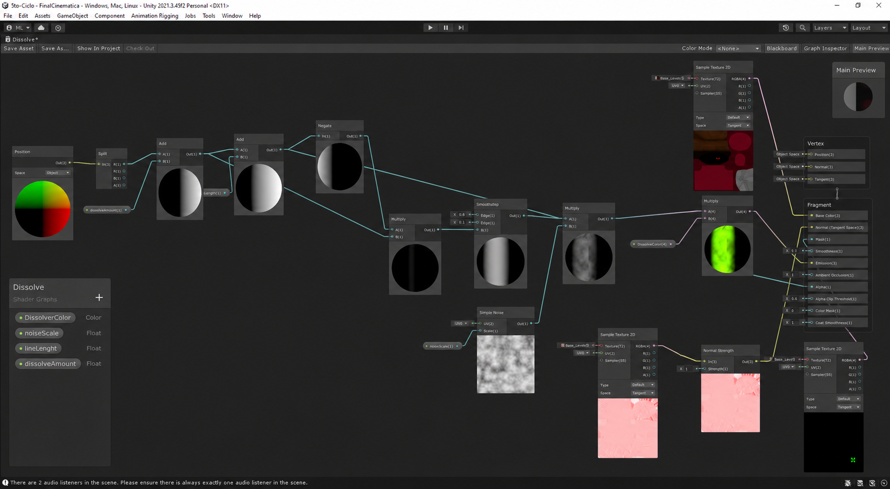

Voodo
Informacion del Proyecto
- Rol→ Programador
- N° de Integrantes→ 9
- Tiempo→ 1 año
- Motor→ Unity
- Niveles→ 2
Herramientas Usadas
- Unity

- C#

- Maya

- GitHub

- Substance 3D Painter

Acerca del Proyecto
"Voodoo" es un videojuego de plataformas 3D con temática de puzzles, en el que participé como programador dentro de un equipo de 9 integrantes. El proyecto representó un reto importante, ya que fue el primer videojuego en 3D en el que trabajé, debido a su mayor escala de desarrollo.
El juego sigue la historia de un personaje convertido en un muñeco vudú por un brujo, quien debe escapar de una casa llena de obstáculos y desafíos mientras explora un entorno que parece gigantesco debido a su reducido tamaño.
El videojuego cuenta con 2 niveles y una Boss Fight, cada uno diseñado para ofrecer una experiencia diferente al jugador.
Lo que realicé
Me desempeñé como Programador Unity, contribuyendo a la implementación de mecánicas del jugador, IA de enemigos, sistemas interactivos e interfaz de usuario. Además, participé en la integración de algunas animaciones, efectos visuales (VFX), audios, musica, cinemáticas, así como en el testing y la corrección de algunos errores que se presentaron durante el desarrollo.
Aporte principal
Desarrollo del sistema de salto del jugador.
Programación de la IA de patrullaje de los muñecos vudú (uso de NavMesh).
Desarrollo de sistemas interactivos (puentes y plataformas).
Implementación del sistema enemigo Gato (Vigilancia y persecución).
Sistema de diálogos de tutorial y cambio de herramientas del jugador.
Desarrollo de la Cinematica Final "The End".
Integración de efectos visuales (niebla y fogata).
Sistema del gato

Vigilancia
En esta fase el enemigo, empieza a rotar en su misma posicion vigilando todo a su alrededor.

Persecución
Al detectar al jugador dentro de su campo de visión, el enemigo cambia de fase y comienza a perseguirlo utilizando NavMeshAgent.
Codificacion - Vigilancia
El enemigo no permanece completamente quieto ni gira sin parar. En lugar de eso, gira durante un tiempo, se detiene unos segundos y luego vuelve a girar. Este ciclo se repite para dar la sensación de que está vigilando activamente el entorno.
void flipMove()
{
if (rotating)
{
//rotacion del EnemyCat
transform.rotation *= Quaternion.Euler(0f, (transform.rotation.y + rotationEnemy)
* Time.deltaTime, 0f);
rotationTimer += Time.deltaTime;
// Si el temporizador alcanza la duracion deseada, detener la rotacion
if (rotationTimer >= rotationMaxTimer)
{
rotationTimer = 0f;
rotating = false;
}
}
else
{
rotationTimer += Time.deltaTime;
// Si el temporizador alcanza 2 segundos, reinicia la rotacion
if (rotationTimer >= rotationMaxTimer-1)
{
rotating = true;
rotationTimer = 0f;
}
}
}
Codificacion - Detección
El sistema de detección utiliza un cono de visión basado en ángulo y distancia. Además, se realiza una comprobación mediante Raycast para asegurar que no existan obstáculos entre el enemigo y el jugador antes de activar la persecución.
void FieldOfViewCheck()
{
Vector3 player = new Vector3(
playerPosition.transform.position.x,
playerPosition.transform.position.y + 1f,
playerPosition.transform.position.z
);
// Dirección desde los ojos del enemigo hacia el jugador
Vector3 posPlayer = player - eyes.position;
// Distancia entre enemigo y jugador
float distanceToTarget = Vector3.Distance(eyes.position,
playerPosition.transform.position);
// Dibuja un rayo en la escena (solo para debug en Unity)
Debug.DrawRay(eyes.position, posPlayer);
// Verifica si el jugador está dentro del ángulo de visión
// Y dentro del rango permitido
// Angle=80
if (Vector3.Angle(transform.forward, posPlayer) < angle / 2
&& distanceToTarget < radius)
{
// Verifica que NO haya obstáculos entre el enemigo y el jugador
if (!Physics.Raycast(eyes.position, posPlayer, distanceToTarget,
obstructionMask))
{
timer = 0;
//Detecta al jugador
canSeePlayer = true;
enemyAudioManager.DetecPlayer();
}
}
}
Cinematica Final "The End"
Me encargué de la implementación de la cinemática final, desarrollando el movimiento de cámara para las tomas, integrando la animación de los brazos del personaje, organizando la composición de la escena e integrando el shader de desaparición del brujo (Shader Graph).
Resultado final de la cinemática implementada en Unity.

Animacion de la Cinematica

Shader Graph utilizado para el efecto de desaparición del brujo.
Lo que aprendi
Al ser mi primer proyecto 3D, fue una experiencia completamente nueva para mí. Algunos aspectos, como los VFX y los shaders, fueron un desafío debido a que no tenía experiencia previa en esas áreas, pero disfruté afrontar estos retos y aprender nuevas herramientas. Este proyecto me permitió crecer tanto a nivel técnico como en el trabajo en equipo y me dio una mejor comprensión del desarrollo de videojuegos 3D.